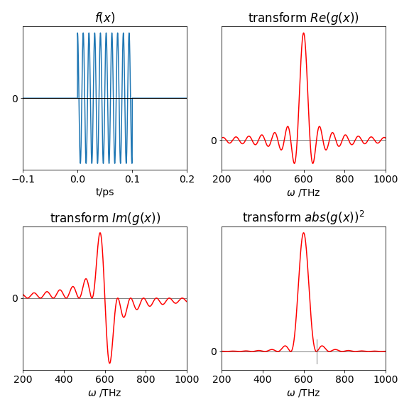

Answers 7-15¶
# import all python add-ons etc that will be needed later on
%matplotlib inline
import numpy as np
import matplotlib.pyplot as plt
from sympy import *
from scipy.integrate import quad
init_printing() # allows printing of SymPy results in typeset maths format
plt.rcParams.update({'font.size': 14}) # set font size for plots
Q7 answer
The transform equation is \(\displaystyle g(k)=\frac{1}{\sqrt{2\pi}}\int_0^\infty \frac{\exp(-t/\tau)}{\tau} \exp(-ikt)dt\) which can be integrated directly to give
The absolute value of a complex number \(z\), is \(\sqrt{z^*z}\) and its square is clearly \(z^*z\), where \(z^*\) is the conjugate of the complex number formed by replacing \(i\) by \(-i\). Doing the same with \(g(k)\) gives \(\displaystyle |g(k)|^2= \frac{1}{2\pi (k^2\tau^2+1)}\) which is the shape of the spectral line.
The exponential decay with \(\tau = 2\) and the corresponding square of the transform, are shown in Fig. 54. In this case \(k\) corresponds to a frequency in s\(^{-1}\)% because \(t\) is in seconds.

Figure 54. An exponential decay and (right) the complex conjugate square of its Fourier transform which is a Lorentzian curve.
The half-width at half-height of the transformed signal squared, is calculated as half the value at \(k = 0\), which is \(| g(0) |^2 /2 = 1/4\pi\) giving the half-width as \(k_{1/2} = 1/\tau\) which is in inverse proportion to the excited-state lifetime. The shorter the lifetime, the wider will be the spectral line in accordance with \(\Delta t \Delta \nu = 1\), if we take the change in time to be the lifetime and the frequency to be proportional to \(k\), which is reasonable because \(k\) has units of s\(^{-1}\).
The widening of the spectral line with a shortening of the excited state lifetime, is sometimes considered an example of the ‘time-energy’ uncertainty principle, but this is not the same as the Heisenberg uncertainty principle. Spontaneous emission is caused by coupling the excited state to the states in the ‘vacuum field’, which have energy levels capable of being filled with photons in a similar way to how electronic energy levels can hold zero, one or two electrons or vibrational or rotational energy levels contain their respective quanta. The difference is that any number of photons can be contained in each of the energy levels because photons are bosons: rather like buses, they like to go around in groups.
The energy levels in this vacuum field fluctuate and so the coupling between these states and the excited state varies which causes the transition to have a real width. If, in addition, the excited state is short lived due to interactions within the atom or molecule or with other nearby species, or with external electric or magnetic fields, this also leads to fluctuations in the atom’s energy levels and the greater these interactions are, the shorter the lifetime and the wider the energy width. This is called lifetime broadening. However, the average energy is always at exactly the transition frequency, and in our example, this is zero because the energy of the excited state above the ground state has not been specified.
The Heisenberg uncertainty principle arises because operators, such as position and momentum, do not commute, but in quantum mechanics time is not an operator, but an observable, therefore commutation does not apply. See Atkins & Friedmann (1997, p. 198) for a detailed discussion of the distinction between Heisenberg uncertainty and time-energy uncertainty.
Q8 answer (a) With the forward transform \(\displaystyle g(\omega) =\frac{1}{\sqrt{2\pi}}\int_0^{t_0} e^{i\omega_0 t}e^{-i\omega t}dt\) which, being exponential, is easily integrated to
The real and imaginary parts part can be obtained by converting the exponential to sin and cosine
The square of the absolute value is obtained by multiplying the complex conjugate \(g^*\) with \(g\):
Plots of the pulse and its transforms are shown in fig 55. The real part becomes the sinc function if it is written as \(\displaystyle \frac{t_0}{\sqrt{2\pi}}\frac{\sin(t_0(\omega_0-\omega)}{t_0(\omega_0-\omega))}\), see fig 15.

Figure 55. Left top: The electric field of a square pulse of 0.1 ps duration. Bottom right: the square of absolute value of the Fourier transform of the pulse; this is its spectrum. The small vertical line shows the position of the first minima, see part (b). Bottom left: The imaginary component of the Fourier transform, the sinc function, and right, the real part.
(b) Differentiating the transform finds the maxima and minima, either side of these are the missing frequencies as the period of the transform’s oscillations is constant. Differentiating gives
which must be zero at each of its minima. Multiplying out factors gives \(\displaystyle (\omega_0-\omega)\sin((\omega_0-\omega)t_0)=2(1-\cos((\omega_0-\omega)t_0))\) which is solved when \(t_0(\omega_0-\omega)=2\pi n\) because here the sine is zero, and when \(\cos((\omega_0-\omega)t_0)=1\) which is when \(n\) is an integer and \(n=\pm 1\), \(\pm 2,\cdots\) or \(\omega = \omega_0-2\pi n/t_0\) thus a series of zeros is expected. The pulse has a width of \(0.1\) ps and zero’s occur at \(\omega=600\cdot 10^{12}\pm 2\pi n\cdot 10^{13}\) Hz and so the first zeros are at \(\approx 662.8 \cdot 10^{12}\) Hz.
Q9 answer (a) As the pulse is square and of finite duration, it lasts only from time 0 to \(\tau\), therefore its Fourier transform is
which is similar to that in Q8 but with the change \(\omega\rightarrow \omega_0-\omega\).
(b) The real and imaginary parts are calculated using Euler’s formula for the complex exponential giving
The real part \(\displaystyle Re[g(\omega)]= \frac{a\tau}{\sqrt{2\pi}}\frac{\sin(\omega \tau)}{\omega}\) which can be converted to the sinc function by multiplying by \(\tau/\tau\), see figs 15 and 55.
(c, d) The pulse is zero, \(Re[g(\omega)]\) = 0, when \(\displaystyle \frac{\sin(\omega \tau)}{\omega\tau}\) = 0 which does not occur when \(\omega\) = 0 but for the first time when \(\omega\tau = \pm \pi\) , because although the sine is zero, the denominator is \(\pi\). L’Hopital’s rule can also be used to determine the value when \(\omega \to 0\):
The pulse has a frequency spread to the first minima of \(2\pi/\tau\) which corresponds to \(2\pi\) MHz for a \(1\,\mu\)s duration pulse. Suppose that only half this frequency range has useful intensity then this extends from \(399.5 \to 400.5\) MHz in a \(400\) MHz instrument. This gives a potential chemical shift of \(\pm 50000/400 = 125\) ppm, which is large compared to most proton shifts which are typically \(\lt 20\) ppm.
Q 10 answer (a) The FID is caused,in a semi-classical interpretation of NMR, by the rotating magnetization cutting the wire coil of the detector, and inducing the current that is subsequently detected. The two different classes of spins move with different frequencies due to their different chemical environments, and hence, experience slightly different magnetic fields. These are the two cosines mentioned in the question. The decay of magnetization is due to the interaction of the spins with one another, with other atoms in the molecule and with dipoles in the solvent. These interactions have the effect of transferring more spins from the upper spin level to the lower one, than in the opposite direction, and hence back towards equilibrium. These effects cause the population to decay with a lifetime T1, and the loss of the spin coherence determines the T2 lifetime. The \(\tau = 100\) in the question represents both these decay processes. In a real experiment the decay time would be of the order of a few seconds and the frequencies in MHz.
(b) Using the FID equation given in the question the Python code below can be used. You should modify this as you wish.
fig1= plt.figure(figsize=(8, 8))
ax0 = fig1.add_subplot(2,2,1) # make space for four plots 2 x 2 label axes 1 , 2, 3 & 4
ax1 = fig1.add_subplot(2,2,2)
ax2 = fig1.add_subplot(2,2,3)
ax3 = fig1.add_subplot(2,2,4)
nmax = 2**14 # number of data points
T = 1000 # max time
x = np.linspace(0, T, nmax)
tp = T/(1.0*nmax) # 1.0 to ensure real number division
freq = np.zeros(nmax,dtype=float) # numpy array to hold data
for i in range(nmax): # frequency is index/( (time/point)*number of points ), values 0 to (N-1)/N
freq[i]= i/(tp*nmax)
pass
nu1 = 1/11.0 # frequency Hz 1 # use for fig 9.14 also
nu2 = 1/12.0
tau = 100.0
f01= lambda x: np.exp(-x/tau)*(np.cos(2*np.pi*nu1*x)+ np.cos(2*np.pi*nu2*x)) # lambda function
the_fft = np.fft.rfft(f01(x)) # use numpy to do the transform, has both imag and real parts
afft = the_fft.real
bfft = the_fft.imag
cfft = [ np.arctan( bfft[i]/afft[i]) for i in range( len(the_fft) ) ] # phase
ax0.plot(x,f01(x)) # now plot data and transforms
ax0.set_xlabel( 'time/s')
ax0.set_title('FID')
ax0.set_xlim([0,500])
ax1.plot(freq[0:nmax//2],afft[0:nmax//2],color='red')
ax1.set_title('spectrum')
ax2.plot(freq[0:nmax//2],bfft[0:nmax//2],color='red')
ax2.set_title('Im part of transform')
ax3.plot(freq[0:nmax//2],cfft[0:nmax//2],color='red')
ax3.set_ylim([-np.pi,np.pi])
ax3.set_title('spectral phase /radians')
ax3.set_ylabel('radian')
for ax in [ax0,ax1,ax2,ax3]: # plot common features
ax.axhline(0,color='gray',linewidth=1) # plot zero line on each plot
ax.spines['right'].set_visible(False)
ax.spines['top'].set_visible(False)
if ax != ax0:
ax.axvline(nu1,linestyle='dashed',linewidth=1)
ax.axvline(nu2,linestyle='dashed',linewidth=1)
ax.set_xlabel('frequency /Hz')
ax.set_xlim([0,0.2])
pass
plt.tight_layout()
plt.show()

Q11 answer
The transform is \(\displaystyle g(k)=\frac{1}{\sqrt{2\pi}}\int_{-t_0}^{t_0}\sin(2\pi t/t_0 +\varphi)e^{-ikt}dt\) which can be evaluated by hand or using SymPy. By hand this is made easier by converting the exponential first and then to sin and cos because we shall want to find the real and imaginary (sin) parts.
t0,t,k,phi = symbols('t0 t k phi')
g = 1/(sqrt(2*pi))*integrate( sin(2*pi*t/t0 +phi)*(cos(k*t) +1j*sin(k*t)) ,(t,-t0,t0), conds='none')
simplify(g)

(b) when \(\varphi = n\pi\) and \(n = 0, 1, 2, \cdots\) then the cosine term is always unity and the sine zero. Thus the transform is wholly imaginary, \(\displaystyle g(k)=\frac{-4\pi t_0\sin(kt_0)}{\sqrt{2\pi}(k^2t_o^2-\pi^2)}\) and the form of the transform is a damped sine wave because the sine is divided by \(k^2\).
# real part of transform
fig2= plt.figure(figsize=(5, 4))
freal= lambda k : -4*np.pi*t0*np.sin(k*t0)/( np.sqrt(2*np.pi)*(k**2*t0**2-4.0*np.pi**2) ) # k is variable
t0 = 1.0
k = np.linspace(0,40,100 ) # make 100 points 0 to 40
plt.plot(k,freal(k),color='blue')
plt.xlabel( 'k')
plt.title('Re(g(k))')
plt.axhline(0,linewidth=1,color='black')
plt.show()

Q12 answer (a) The Fourier transform of the \(\delta\)-function is obtained directly by using its selecting property. For instance acting on a function \(f\) gives, \(\displaystyle \int f(x)\delta(x-a)dx = f(a)\) and no integration is necessary, therefore
The probability density is \(P_k^*P_k=1/2\pi\) because the complex conjugate is \(\displaystyle p^* = e^{+ikx}/\sqrt(2\pi)\). Because \(P^*P\) is a constant the scattering off an atom is the same in all directions.
(b) The Gaussian function has the transform
calculating the integral is helped with substitution \(s=(x-a)/d\) and using \(\displaystyle \int_{-\infty}^{\infty}e^{-s^2}ds\)=1. The result is \(\displaystyle P_k=e^{-k^2d^2/4}e^{-ika}/2\).
The transform is itself a Gaussian, but in transform or \(k\)-space, which is in this case reciprocal distance, the products \(kd\) and \(ka\) are dimensionless. The scattering intensity is \(\displaystyle P_k^*P_k = e^{-kd^2/2}\). As with the \(\delta\) function the scattering is the same in all directions because the power density does not depend on \(x\). However, the power density now depends on the width of the Gaussian, the more spread out it is, hence large \(d\), the smaller is the scattering. In the limit that the Gaussian becomes very narrow, it approximates the \(\delta\)-function.
Q13 Answer
Using the result from Q12, the transform is \(\displaystyle \frac{1}{\sqrt{2\pi}}\int_{-\infty}^{\infty}[\delta(x-a)+\delta(x+a)]e^{-ikx} dx = \frac{1}{\sqrt{2\pi}} (e^{-ika}+e^{+ika})\) and because \(\displaystyle 2\cos(ka)=e^{-ika}+e^{+ika}\) the transform is \(\displaystyle P_k=\frac{2}{\sqrt{2\pi}}\cos(ka)\).
The probability density is simply the square of this because \(P\) is real, and shows that the scattering depends on the separation of the centres being maximal when \(ka=\pi n\) if \(n\) is an integer.
Q14 answer
The delta function at position \(a\), is \(\delta (x-a)\), hence at position 2\(a\) is \(\delta (x - 2a)\), and at any position \(n\), is \(\delta (x − na)\)). The comb of atoms is represented by the equation \(\displaystyle C(x)=\sum_{n=-\infty}^\infty \delta (x-na)\). The Fourier transform of one atom at position \(n\) is (see Q12),
The total transfrom \(\chi\) is therefore the sum of many of these terms, each term contributing \(\displaystyle e^{-ikna}/\sqrt{2\pi}\) to the sum, hence for all positions,
and because of the selecting property of the \(\delta\)-function it is not necessary to evaluate the integral as \(\displaystyle \int f(x)\delta (x-a)=f(a)\).
At this point we need to decide what relative phases the X-rays can have. If this is left undefined then the summation turns out to be zero, because if the waves can have any phase whatsoever when they scatter, then they are on average, out of phase with one another, and add up to zero. To show this using standard summations (Chapter 5, Table 1) the summation can be split into two parts, one with \(n\) from \(-\infty \to 0\), the other from \(0 \to \infty\). The term with \(n = 0\) is then subtracted from the total as this is counted twice. The summation, however, comes to zero after one of the extra \(n\) = 0 term is subtracted.
An alternative, and more intuitive, way of performing the summation, is again to start with \(\displaystyle \chi= \frac{1}{\sqrt{2\pi}}\sum_{n=-\infty}^{\infty}e^{ikna}\) then take pairs of functions with index values \(\pm n\), starting at \(\pm 1\), and then add the \(n\) = 0 term and evaluate the result using the relationship \(\displaystyle 2 \cos(nx) = e^{inx} + e^{−inx}\). This gives \(\displaystyle \chi(k)= \frac{1}{\sqrt{2\pi}}[1+2\sum_{n=1}^\infty \cos(nka)]\).
Next, by defining \(ka = 2\pi m\), where \(m\) is an integer, means that a wave with wavevector 2\(\pi\)/a will be exactly in phase with the next atom, and two such waves in phase between the next neighbouring atoms and so forth. The quantity \(k = 2\pi m/a\), often called the wavevector, has units of reciprocal distance. The summation becomes
and is finite for each integer value of \(m\) and the cosines are all integer multiples of 2\(\pi\) and are therefore unity. This means that the transform is a series of spikes at \(m/a\), or at fixed intervals of 1/\(a\), in reciprocal space. In practice, the scattering due to a one-dimensional comb of atoms depends on the angle of incidence of the X-rays and the Bragg condition. The scattering forms a cone with its apex on the atoms.
This calculation can be extended to two or three dimensions and to other patterns of gaps between ‘atoms’. In three dimensions, a similar calculation illustrates that the process of diffraction, or scattering in X-ray crystallography produces data in reciprocal space.
If we calculate \(\chi(m)\), starting with \(n = 1 \to 50\) and \(m = 0 \to 10\) a series of spikes is produced at \(m = 0, 1, 2, \cdots\) and so forth, which become more like \(\delta\) functions as \(n\) increases. The next figure demonstrates this.
m0 = 10 # maximum m to plot
nmax = 50 # summation max
chi = lambda m: 1.0 + 2.0*sum( [ np.cos(2.0*np.pi*m*n) for n in range(1,nmax)] )
m = np.linspace(0,m0,5000)
plt.plot(m,chi(m))
plt.title(r'$\chi(m) $')
plt.xlabel('m')
plt.show()

Q15 answer (a) The pulse has an absolute value of \(x\), so it is symmetrical about zero. The fwhm is \(2\ln\)(2) and as the pulse is \(\tau= 10\) fs long the scaling is \(a = \ln(2)/\tau\) in units of fs\(^{-1}\). The Fourier transform can be taken from zero to infinity with \(\displaystyle e^{-ax}\), and from \(-\infty \cdots 0\) with \(\displaystyle e^{ax}\), and the results added and simplified.
The transform is \(\displaystyle \frac{1}{\sqrt(2\pi}\int_o^\infty e^{-ax}e^{-ikt}dt = \frac{1}{\sqrt(2\pi}\frac{a}{a+ik}\) and the integration gives \(\displaystyle -\frac{1}{\sqrt(2\pi}\frac{a}{a-ik}\).
Adding these results produces \(\displaystyle f_k=\frac{1}{\sqrt(2\pi}\frac{2a}{a^2+k^2}\). When plotted this looks something like a bell-shaped curve but is more pointed at the top; it has a Lorentzian shape. The full width at half maximum is \(\displaystyle k_{fwhm}=2\left( \frac{4a}{\sqrt{2\pi}}-a^2 \right) \) which for a \(10\) fs pulse is \(0.65 \cdot 10^{14}\, s^{-1}\). The central wavelength of the laser is \(800\) nm or \(12500\,\mathrm{ cm^{-1}}\), the frequency spread then \(12500 \pm 0.6505 \cdot 10^{14}/c/2\, \mathrm{cm^{-1}}\) or \(14670 \to 10329 \,\mathrm{cm^{-1}}\) which is \(681.7 \to 968.1\) nm and covers most of the deep red part of the visible spectrum and spreads into a wavelength region where the eye is insensitive. As a consequence, lasers such as these, titanium sapphire is an example, appear very faint when in fact they could be very intense.
(b) The laser cavity is \(1.5\) metres long, hence with these wavelengths, approximately \(4.4 - 3.1 = 1.3\) million modes (half wavelengths) exist in the cavity and all these have to be in phase to form a pulse.